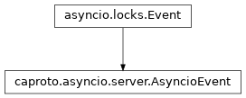

caproto
1.1.0
Install Caproto
Clients
Servers
Environment Variables
Shark (pcap/tcpdump parsing)
Logging
IOCs
Input-Output Controllers (IOCs)
Records
IOC Template Cookiecutters
Writing Your Own Documentation
Server API
Data Containers
High-level API / pvproperty magic
Library-agnostic server core
asyncio server
Implementation classes
caproto.asyncio.server.AsyncioAsyncLayer
caproto.asyncio.server.Context
caproto.asyncio.server.Event
caproto.asyncio.server.ServerExit
caproto.asyncio.server.VirtualCircuit
Helper functions
Curio server
Trio server
Channel Access Sans I/O
Writing Your Own Channel Access Client
Core API Documentation
Appendix
Details of our Protocol Compliance for CA Nerds
References
Release History
Caproto-in-a-box
caproto
Server API
caproto.asyncio.server.Event
View page source
caproto.asyncio.server.Event
¶

caproto.asyncio.server.
Event
¶
alias of
AsyncioEvent